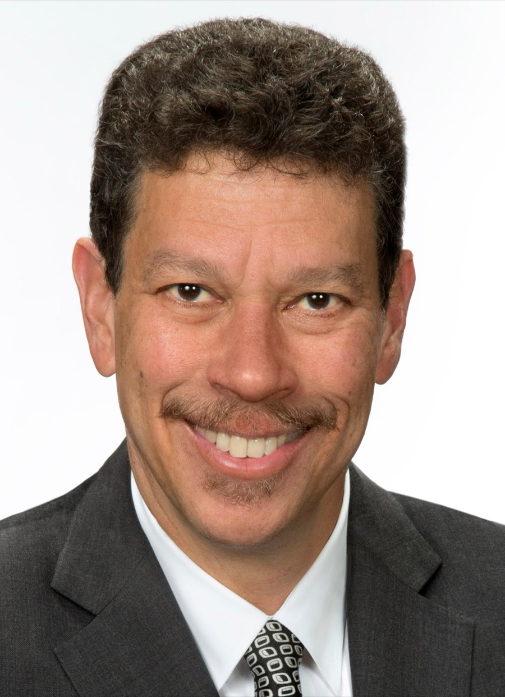

Project lead
David B. Wilkins
Lester Kissel Professor of Law · Vice Dean for Global Initiatives on the Legal Profession · Faculty Director, Center on the Legal Profession, Harvard Law School
David B. Wilkins is the Lester Kissel Professor of Law, Vice Dean for Global Initiatives on the Legal Profession, and Faculty Director of the Center on the Legal Profession at Harvard Law School. For decades he has studied the legal profession as a system — who enters it, how careers unfold, how firms make money, and how the profession globalizes and transforms. He has written over 80 articles on the legal profession and directs major studies including Globalization, Lawyers, and Emerging Economies and After the JD, a ten-year longitudinal study of lawyers' careers. In 2007 he co-founded Harvard Law School's Executive Education Program, and in 2012 he was elected a Member of the American Academy of Arts and Sciences.